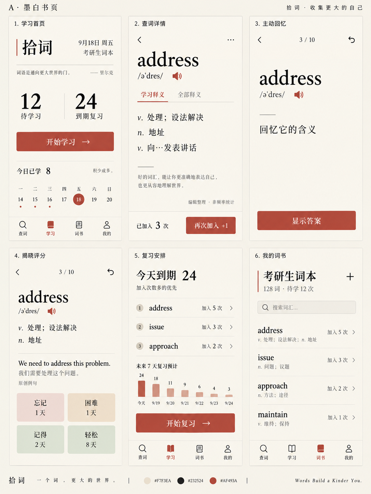
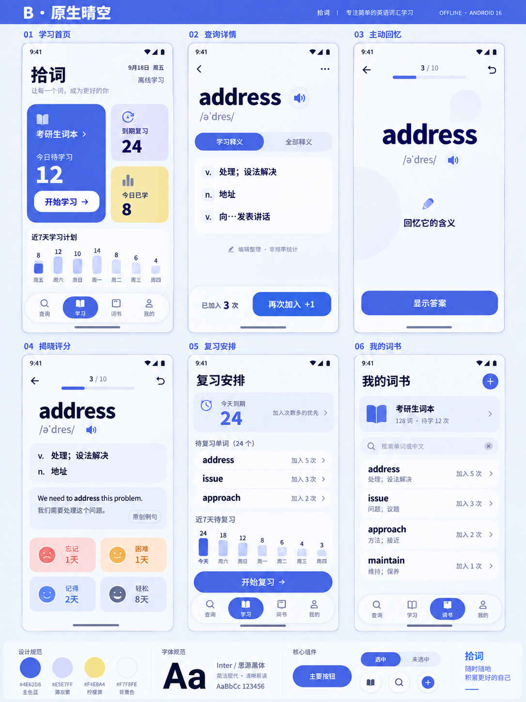
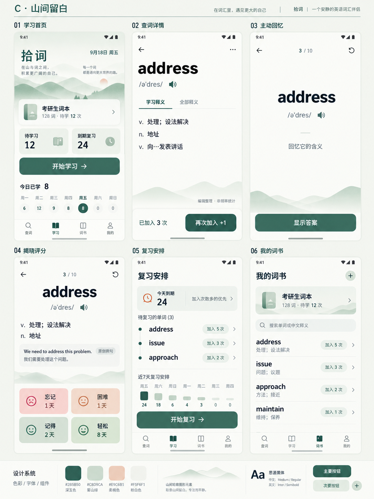
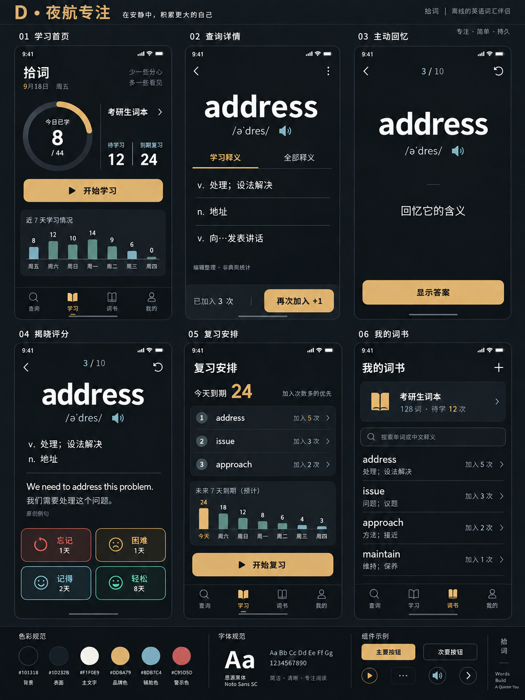
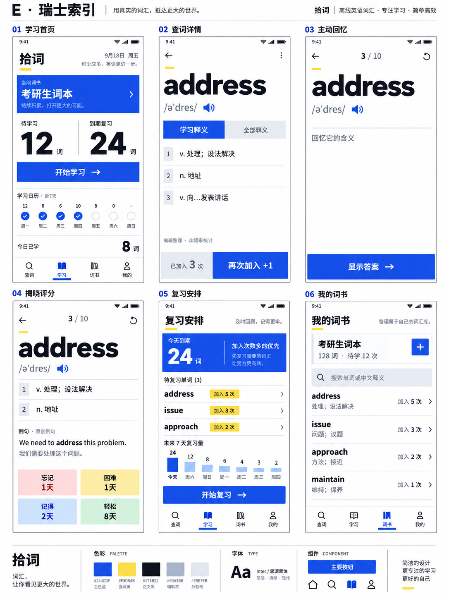

每套都包含学习首页、查词详情、主动回忆、揭晓评分、复习安排和我的词书。选定视觉方向后，再统一落地控件、状态和交互。点击图片可打开原图放大查看。
完整交互与设计规范 · 完整生图提示词
纸白与朱红，英文衬线字与细线分区。安静、克制，适合长时间阅读。

蓝紫与浅柠檬色，圆润任务模块和鲜明操作层级。明快、亲和，原生感更强。

雾绿、玉绿和轻量山形，开放学习区与舒缓日程。自然、放松，有呼吸感。

深石墨、暖白字与琥珀操作色，干净的大面积留白。沉静、精密，深色优先。

纯白与群青，严格网格和索引式列表。清晰、理性，强调快速扫描。
